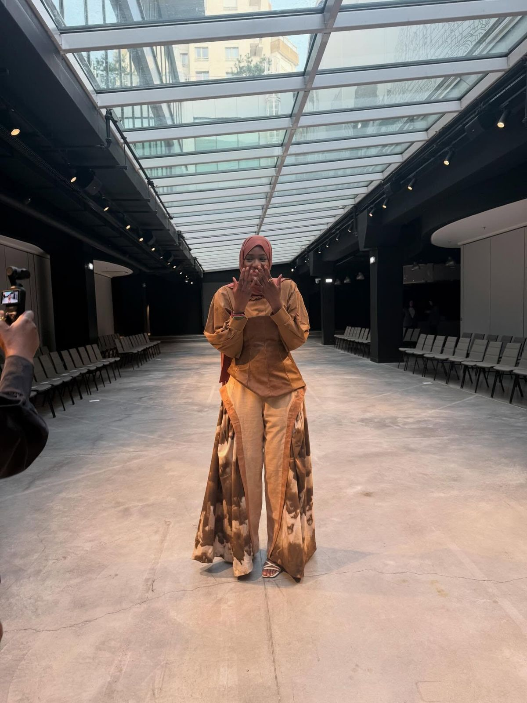
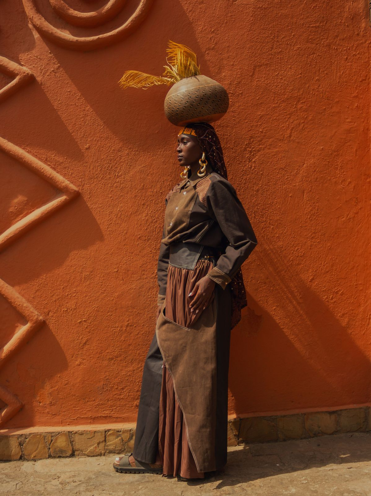
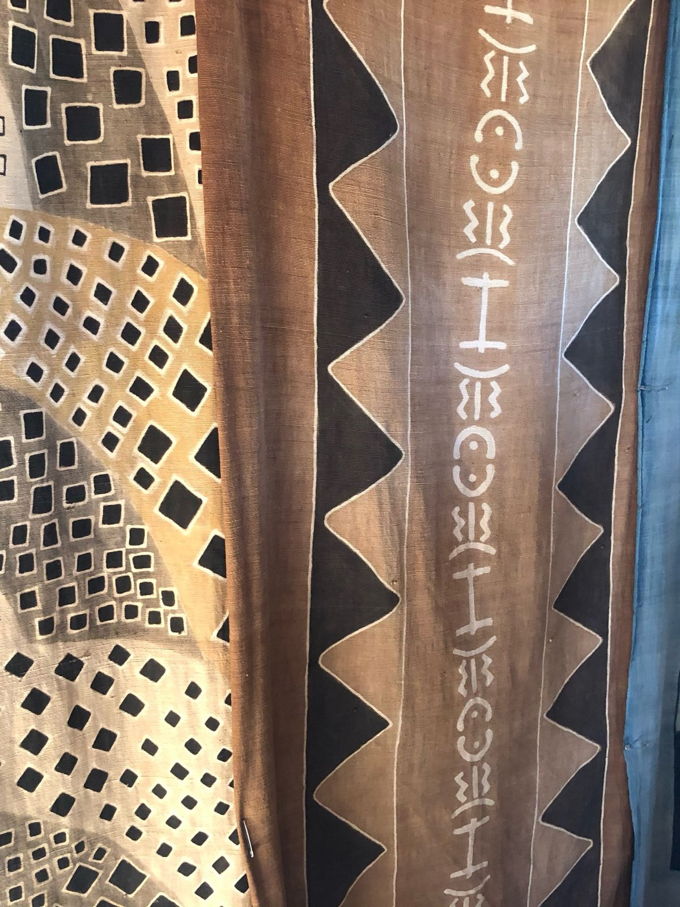
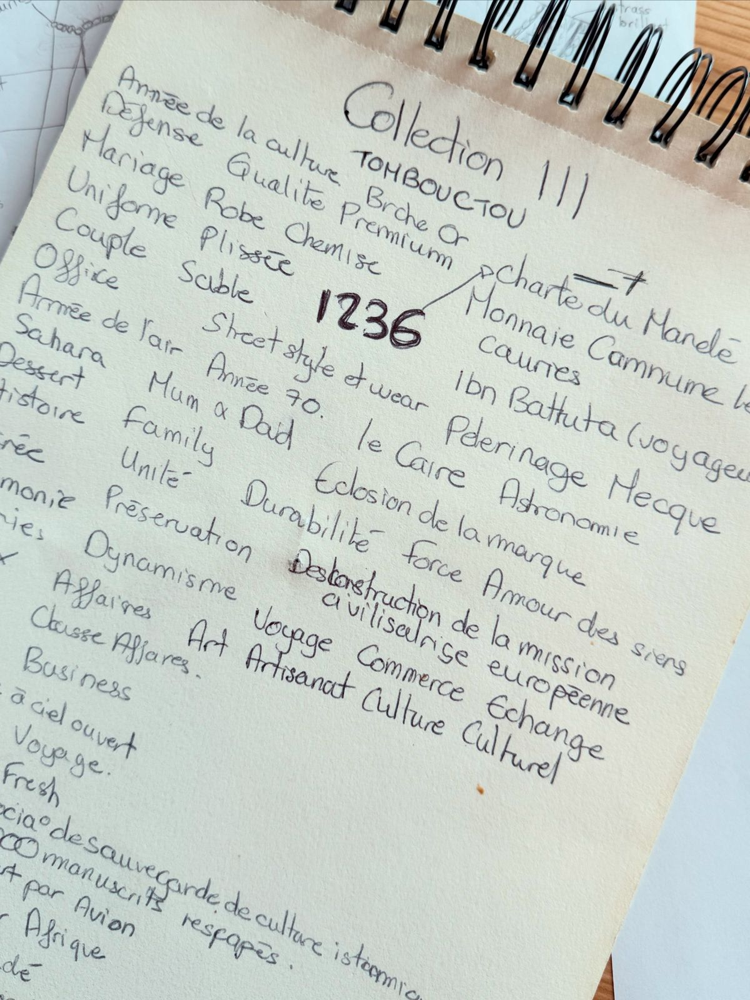
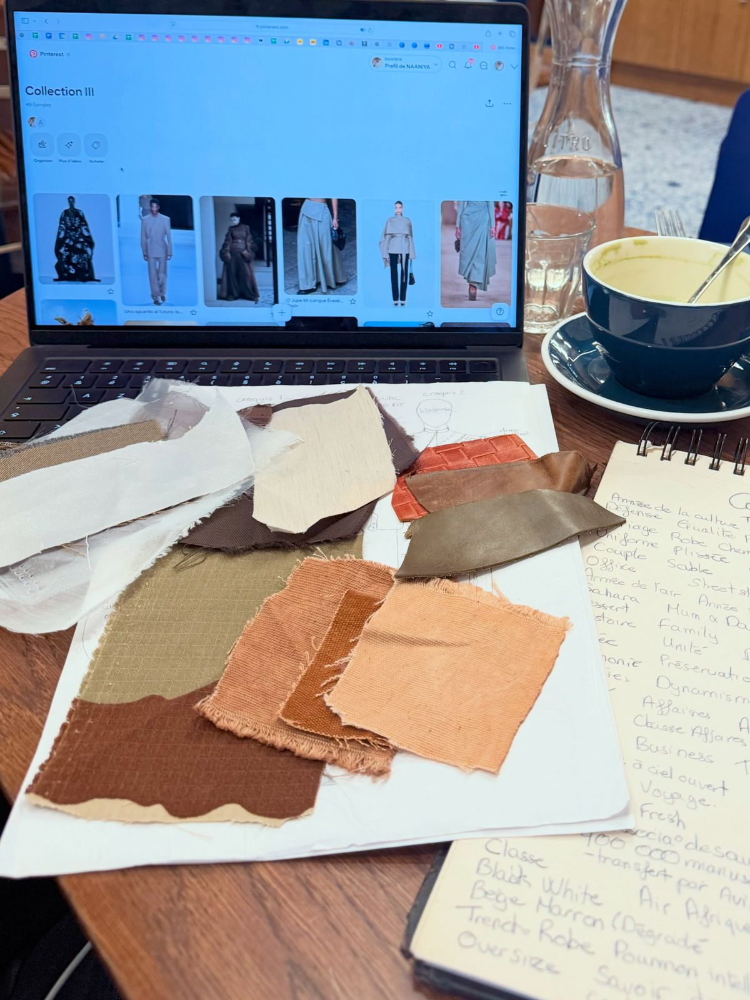
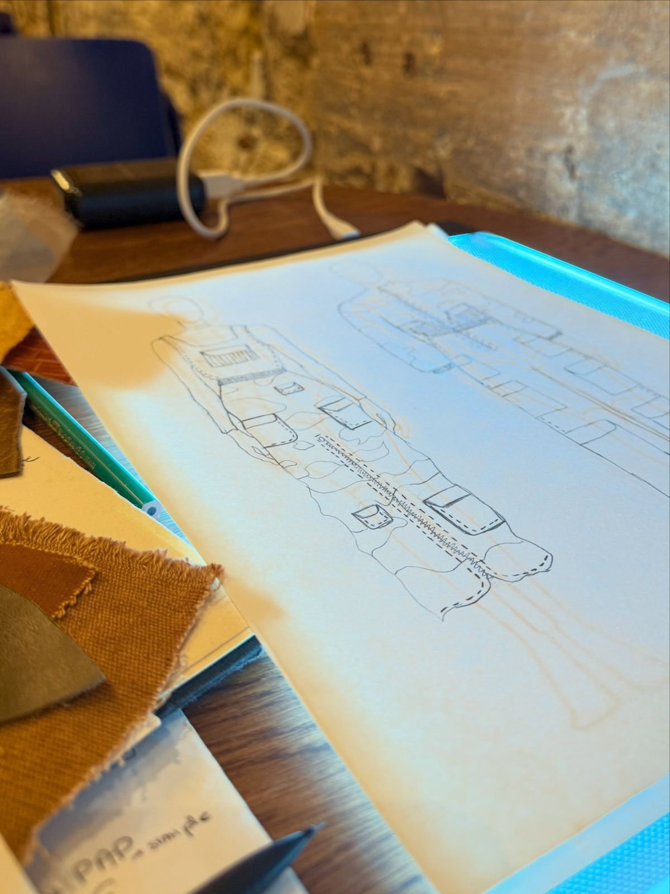
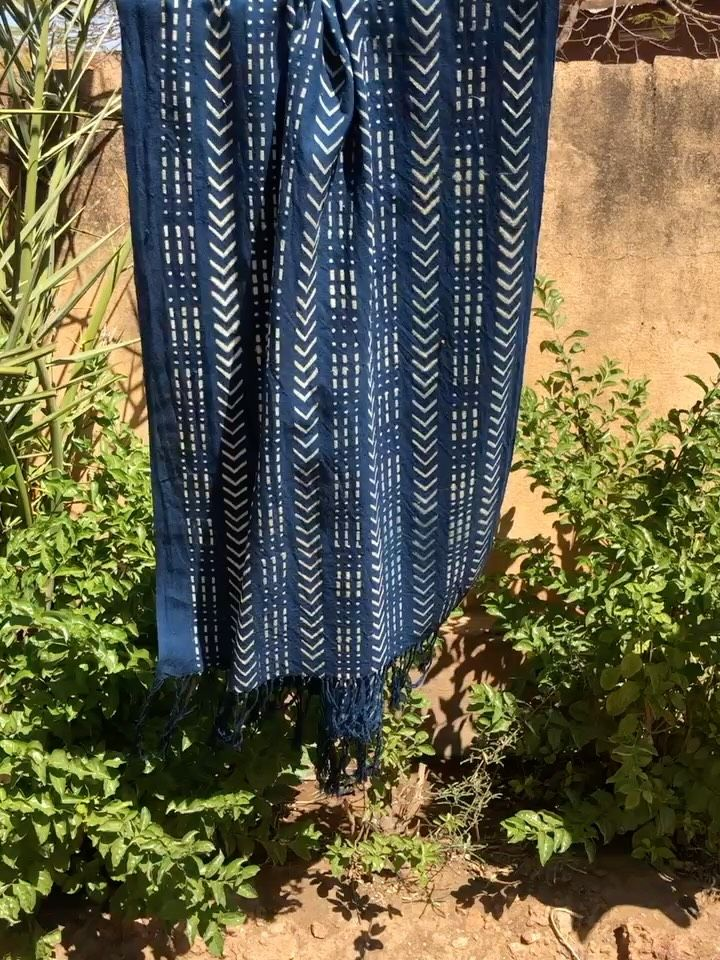
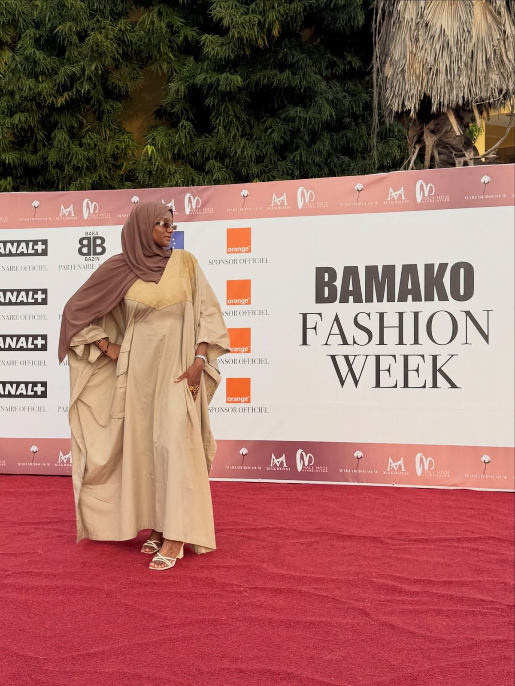
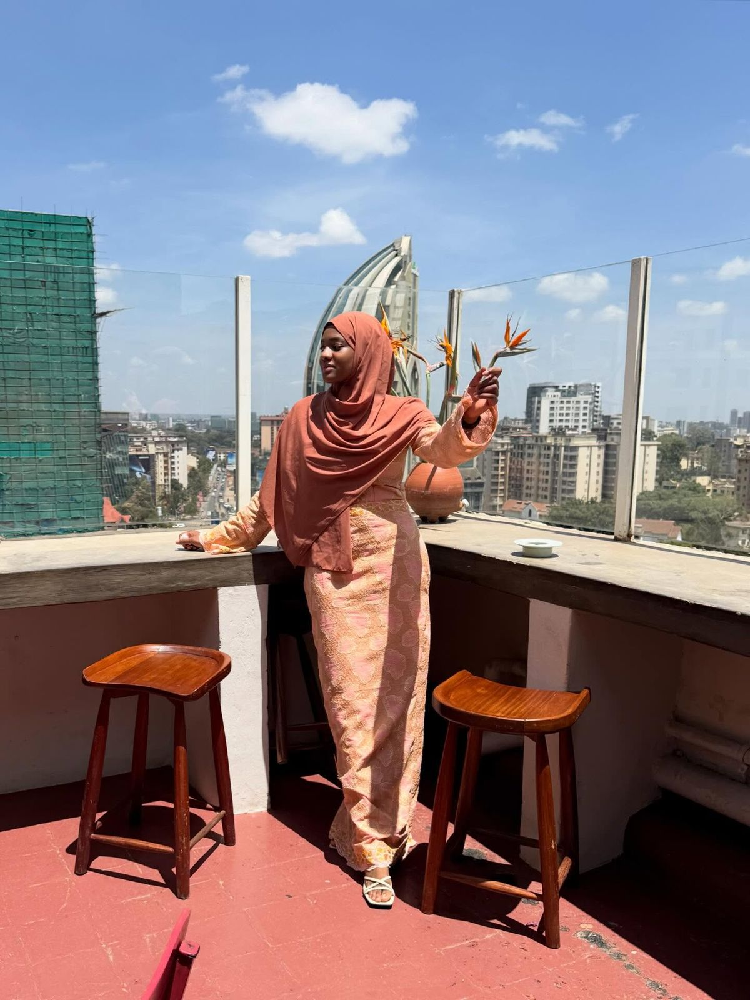
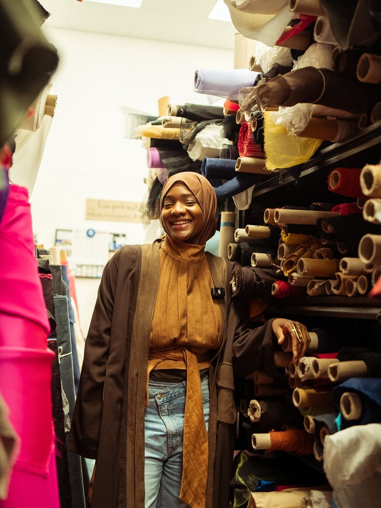

Paris
Fashion Week 2026. La collection Tombouctou, du croquis au podium.

Collection Tombouctou
Des vêtements imaginés, dessinés et cousus à la main par Madina, entre Paris et le Mali.
Tombouctou fut une ville de savants. Ses manuscrits ont traversé les siècles parce que des familles les ont gardés, recopiés, transmis.
Cette collection part de là. Le bogolan du Mali y rencontre des fins de séries de tissus de grande qualité dénichées en France. Chaque pièce garde la trace de la main qui l’a coupée.

Vingt passages, présentés à la Fashion Week de Paris en 2026. Faites glisser pour suivre l’ordre de sortie.
Chaque pièce est coupée et cousue en petite série. Le prix et le délai de fabrication vous sont communiqués avec votre demande.
Rien n’est confié à une usine. Une collection commence dans un carnet et finit sous les projecteurs.





Fashion Week 2026. La collection Tombouctou, du croquis au podium.

Invitée à la Bamako Fashion Week pour présenter Tombouctou, quelques années après un premier défilé hautement symbolique au Mali.

Une fille d’Afrique de l’Ouest à l’Est du continent : le shooting de la collection et la Nairobi Fashion Week.

J’imagine, je dessine, je crée et je couds depuis 2016.
Styliste d’origine malienne, Madina a fondé NAANIYA pour raconter l’héritage textile du Mali avec les codes d’aujourd’hui. Ses collections portent des noms de retours et de routes : Le Retour, montrée à Bamako, FAMa, puis Tombouctou.
Elle prend la parole sur la mode pudique, les métiers d’art et les nouvelles routes créatives entre l’Afrique et ses diasporas. Et elle répond elle même à vos messages.
Suivre Madina sur InstagramAjoutez vos pièces à la sélection, puis envoyez votre demande. Madina vous répond avec les tailles, le prix et le délai. Les essayages se font à Paris, sur rendez vous.